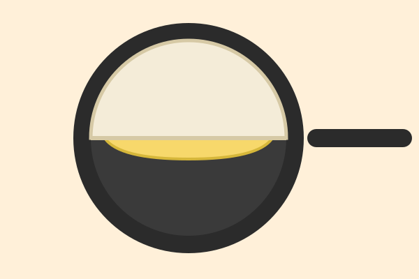

Tapioca recheada
Uma receita rápida, de uma só etapa, com opção doce e salgada. Ela não leva glúten e funciona bem para quem quer algo leve e rápido de fazer.

| Tempo total | 7 minutos |
|---|---|
| Rendimento | 1 porção |
| Equipamento | Fogão, frigideira antiaderente com cerca de 20 centímetros e espátula |
| Contém | Sem glúten. O recheio de queijo contém leite, e o de banana é vegano. |
Ingredientes
Marque cada item depois de separá-lo. As medidas estão explicadas na página medidas usadas nas receitas.
Recheio salgado
Recheio doce
Modo de preparo
Cada passo tem uma única ação. Siga na ordem.
- Separe a goma e o recheio escolhido em cima da bancada.
- Aqueça a frigideira seca em fogo médio por 1 minuto.
- Espalhe a goma sobre toda a base da frigideira, em uma camada uniforme. Pode usar uma peneira para facilitar.
- Espere cerca de 1 minuto e 30 segundos, sem mexer. Use o cronômetro abaixo.
- Quando a goma virar uma massa só e se soltar das bordas, coloque o recheio em uma das metades.
- Dobre a tapioca ao meio com a espátula.
- Deixe mais 30 segundos e transfira para um prato.
Como saber que está pronto
Não dependa só da visão. Use também o tempo, o som, o cheiro e o tato.
- Tato: ao balançar levemente a frigideira, a massa se move inteira, como um disco único.
- Visão: o pó branco virou uma massa mais compacta e um pouco translúcida.
- Cheiro: cheiro suave de goma cozida. Se estiver forte, o fogo está alto demais.
- Recheio: o queijo está pronto quando amolece e começa a derreter.
Cronômetro de apoio
Use este cronômetro para o passo 4, enquanto a goma cozinha. Ao terminar, o cronômetro mostra uma mensagem na tela, toca um aviso sonoro e vibra em aparelhos que permitem. Para ouvir quanto falta com um leitor de tela, use o botão “Dizer tempo restante”.
00:00
Segurança
- Mantenha o cabo da frigideira virado para dentro do fogão.
- A frigideira e a tapioca ficam muito quentes. Use a espátula e não os dedos.
- Não deixe a frigideira ligada sem ninguém por perto.
Adaptações de acessibilidade
- Cegueira ou baixa visão: use uma peneira com cabo para espalhar a goma de forma uniforme, confirme o ponto pelo tempo do cronômetro e pelo movimento da massa ao balançar a frigideira, e use sempre a espátula, nunca os dedos.
- Surdez ou perda auditiva: o ponto da tapioca é visual e de tato, então o aviso do cronômetro na tela ajuda a controlar o tempo.
- Mobilidade reduzida ou uso de uma só mão: use uma frigideira leve e antiderrapante e uma espátula com cabo engrossado. Se for difícil dobrar, sirva a tapioca aberta, com o recheio por cima.
- Dificuldade de concentração ou de memória: a receita tem poucos passos e tempos curtos. Marque os ingredientes na lista antes de ligar o fogo.
Quer saber mais? Leia como tornar a cozinha mais acessível.